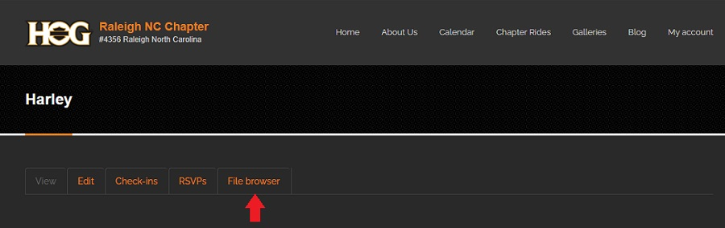
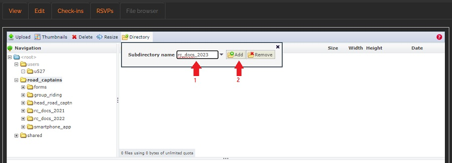

Create a new Subdirectory
Steps in this section only need to be done at the start of the calendar year
Once the subdirectory for the current year has been created, files will be added by following the steps in the Upload a Document section.
- Login to your account on raleighhog.com
- Click on the My account link in the navbar. see image below

- On your account page, click the File browser tab. see image below 
- The following window opens. This shows all the directories the Road Captains have access to. Road Captains will only use the road_captains directory for this tutorial.
- Click the road_captains directory highlighted in the above image to expand it. see image below

- If the current calendar year does not show, use the following steps to create the a subdirectory. Otherwise, go to the Upload a Document section to continue.
- This tutorial assumes that a directory for 2023 needs to be added and the steps following show how to add it. Follow these steps to create the yearly subdirectory for your current situation.
- Ensure that the road_captains directory is highlighted. Click it to ensure it is.
- In the toolbar, click Directory and there will be a dropdown. see image below
- Fill in the name for the new directory, then click the Add button. For this tutorial, 2023 will be the name of the new directory. see image below 
- The new directory shows in the list. Click the x in the upper right corner of the dropdown to close it. see image below

- Go to step 6 in the next section, Upload a Document, to populate the new directory